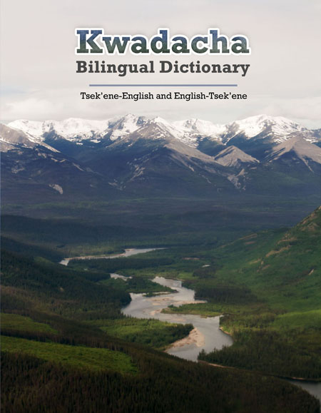

Welcome to the web page for the Kwadacha Tsek'ene bilingual dictionary

This web page contains the accompanying sound files linked to
the initials of the first name and last name of the speaker who pronounced the words
and sentences of the dictionary: